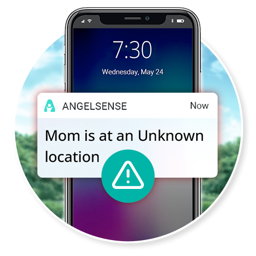

My 82-Year-Old Mom Drove to Buy Bread and Vanished for 8 Hours — The GPS Watch I Finally Found Is Quietly Keeping Memory-Loss Seniors Safe at Home

The phone call came at 4:12 PM on a Tuesday.
It was a state trooper, calling from a Walmart parking lot in a town I’d never heard of. “Ma’am, we have an Eleanor Whitman here. Is she your mother?”
I dropped my coffee. “Yes — is she okay? Where is she?”
“She’s safe, ma’am. She’s in the back of my cruiser with a bottle of water. We’re in Sandusky, Ohio. She doesn’t seem to know how she got here. She has your number on a card in her wallet.”
I sat down on the kitchen floor. Sandusky is sixty-two miles from my mother’s house.
That morning, at around 9:30, my mother had gotten in her car to drive to the Kroger four blocks from her house to pick up bread, milk, and a can of cat food for Whiskers. That’s it. A trip she’d made every week for the last forty-two years.
Six and a half hours later, she was in another county.
The trooper later told me that a Walmart employee on her smoke break had noticed an elderly woman sitting in the driver’s seat of a Buick, engine off, just staring at the steering wheel. The woman had been there, motionless, for at least an hour. When the employee approached and gently asked if she was okay, my mother said: “I think I forgot what I’m doing here.”
That night, after I’d driven six hours round-trip to bring her home, after I’d sat with her at her kitchen table while she shook her head and said over and over “I just don’t understand how I ended up there”, after I’d finally tucked her into her own bed and turned out the light —
I sat in my mother’s living room and asked myself the question that I’m still asking eighteen months later:
What if next time, nobody finds her?

My name is Patricia. I’m 56 years old. My mother’s name is Eleanor — everyone calls her Ellie — and she has lived alone in the same Cleveland house for forty-two years. The house I grew up in. The house my father built the back porch on with his own two hands.
She doesn’t want to leave. She doesn’t want assisted living. She doesn’t want to move in with me — we tried that for six weeks after Dad passed and it nearly broke us both.
“I have my routines, Patricia. I have my garden. I have my church. I’m not ready to be put away yet.”
And the truth is — she isn’t. She still cooks her own meals. Still hosts her bridge club every other Wednesday. Still gardens. Still reads three books a week.
But she’s 82. And after the Walmart parking lot incident, her doctor used three letters that have changed our lives ever since:
MCI. Mild cognitive impairment. The waiting room of dementia.
Sandusky wasn’t the first sign. Just the loudest one.
Looking back, the Sandusky day didn’t come out of nowhere. There was a quiet trail of moments I excused, joked about, or filed away as “just aging.” If even two or three of these are happening with your parent, please don’t make my mistake of waiting:
- Repeating the same question within minutes — not within hours or days. The window is short and the loop is tight.
- Getting briefly disoriented in places they’ve known for years — the grocery store, the neighborhood, sometimes a room in their own house.
- Misplacing items in unusual places. Keys in the freezer. Reading glasses inside the dishwasher. The remote control inside a kitchen drawer.
- Losing track of the day, season, or what year it is — especially when there’s no obvious reason to be confused (no jet lag, no illness, no medication change).
- Driving past familiar turns, or arriving somewhere with no memory of the drive. This is the one that worried Mom’s doctor most.
- Wearing the same clothes for several days in a row without realizing it — or putting on layers that don’t match the weather.
The Statistic Nobody Tells You About Aging Parents
After Sandusky, I went home and started reading.
What I learned terrified me.
According to the Alzheimer’s Association, 6 in 10 people with dementia will wander at least once — and many will do it repeatedly. Wandering can happen at any stage of the disease, including the very early stages, when the person still seems fine to everyone around them.
And here is the part that haunts me:
If a wandering senior is not found within 24 hours, up to half of them will suffer serious injury or death. Not from the dementia itself — from exposure, dehydration, traffic accidents, falls in unfamiliar terrain, or simply from getting too cold or too hot or too lost to be saved in time.
The phrase the Alzheimer’s Association uses for this is “critical wandering.” Every year, tens of thousands of older Americans become missing-person cases — not because anyone took them, but because their own minds led them somewhere they couldn’t come back from.
My mother got lucky in Sandusky. The Walmart employee noticed. The trooper was kind. She had her wallet with my number on a card my brother had laminated for her years ago.
I lay in bed that night and realized something that made my stomach turn:
Mom got home because of a coincidence. Because a stranger on a smoke break happened to glance at a parked car. Because the trooper was patient enough to call instead of just driving her to a hospital. Because the laminated card was still readable after eight years in a wallet.
Coincidence is not a safety plan.

I Tried Everything I Could Think Of. Most of It Didn’t Work.
First, the daily check-in calls.
I called Mom every morning at 9 and every evening at 7. My brother Brian took weekends. We had a system.
The problem? Sandusky happened between my morning call and my evening call. She left for the grocery store at 9:30 — right after we’d hung up — and I didn’t know she was missing until the trooper called at 4 PM. Six and a half hours of unknown.
Phone calls aren’t a tracking system. They’re a guilt-management system. They make us feel better. They don’t make her safer.
Then, Find My iPhone.
I bought my mother an iPhone (her old flip phone didn’t support tracking) and showed her how to use it. Set up Find My, added myself as a family member, taught her to keep it charged.
It worked great — until the day she left it on the kitchen counter. Twice in the first week. Then a third time. “Patricia, the phone is too heavy in my purse. I can’t carry it everywhere I go.”
And here’s the part nobody talks about: a phone tracker only works if your loved one remembers to bring the phone. Memory loss is the exact reason you need tracking. Memory loss is also the exact reason it gets left behind.
Then, the Apple Watch.
This one almost worked. I bought her an Apple Watch, paid the extra $10/month for cellular service, and taught her to wear it.
Three problems emerged within a month:
One: The battery only lasts about 18 hours. She had to charge it every single night. She forgot. Often.
Two: She couldn’t figure out how to use it. “Patricia, I can’t see the screen. The buttons are too small. I keep accidentally calling Carol from my bridge club.”
Three: The Apple Watch wasn’t built for somebody with memory loss. It was built for tech-comfortable adults who want a fitness tracker. There were no alerts when she went somewhere unexpected. No way for me to call her if she was lost — she had to call me.
$429 sat unused in a kitchen drawer next to the unused Life Alert pendant my brother had bought her years before.
Then, the medical alert pendant.
I tried again. Different brand this time. $49.95 a month, $599 a year, two-year contract.
She wore it for eleven days.
By day twelve, I noticed she’d “forgotten” to put it on after her shower.
“Patricia, it makes me feel like I’m being monitored. Like I’m a patient. I’m not a patient. I’m your mother. I don’t want to wear a flashing red pendant around my neck that announces to every visitor that I’m one bad day away from a nursing home.”
That’s when I learned a hard truth that I think most adult children don’t understand:
Pride is a real safety risk.
Our parents have spent their entire adult lives being competent — raising children, holding jobs, paying mortgages. The thought of becoming someone who has to be monitored, alarmed, watched, alerted… it’s humiliating to them. So they take the pendant off. They leave it in the drawer. And then they wander.
I was running out of ideas. I was running out of patience with my own anxiety. I was running out of reasons to believe my mother could keep living independently.
And honestly — that last one scared me more than any of the others. Because I knew how she would handle being told she had to leave her house. It would break her.
Until my sister-in-law Susan mentioned something at Easter dinner.
My Sister-In-Law Said One Sentence That Changed Everything
Susan is a hospice nurse. She’s seen everything. When she talks about elderly safety, I listen.
We were on the back porch after dinner. I was telling her about Mom — the Sandusky disappearance, the abandoned Life Alert, the iPhone left on the counter, the unused Apple Watch.
She was quiet for a moment. Then she said:
“Patricia, the families I work with don’t use Life Alert anymore. Most of them haven’t for two or three years. There’s a different category of device now — built specifically for people with memory loss.”
I leaned forward.
“It’s a small wearable that goes on the wrist or clips inside her clothes. Real-time GPS, all day, every day — you can see where she is from your phone any time. If she leaves a familiar route or arrives somewhere she’s never been, you get an alert immediately. Not six and a half hours later.”
She paused.
“And the part that matters most for someone like Ellie…”
“You can call her on it like a phone, and the device auto-answers without her doing anything. So if she’s confused, lost, scared — you don’t have to wait for her to figure out how to call you. You just call her, and you’re talking to her, through her wrist.”
I felt something in my chest unclench for the first time in months.
“What’s it called?”
“AngelSense,” she said. “Look it up tonight. I’ve recommended it to nine families with a parent showing memory loss. Every single one of them tells me the same thing: they finally sleep at night.”
What I Found That Same Night Made Me Order It Before Bed
I sat at my kitchen table with a glass of wine and read about AngelSense for two and a half hours.
It was created by a father whose son was on the autism spectrum and prone to wandering. He couldn’t find anything on the market that did what he needed, so he built it himself. Today, the same technology is being used by tens of thousands of families to protect children with autism, adults with Down syndrome, and seniors with dementia.
It’s the only consumer GPS device I could find that was actually designed for people with cognitive impairment — not athletes, not commuters, not gym-goers wearing it as an afterthought.

Here’s what it actually does, in plain English:
1. Real-time GPS, all day. You open the app on your phone and see exactly where she is, on a map, updating every few seconds. Not “last seen two hours ago.” Right now. This second.
2. Auto-answer two-way speakerphone. This is the feature that sold me. You can call her from your phone, and the device auto-answers — she doesn’t have to press anything. You start talking, she hears you through a clear speakerphone, and she talks back. If she’s confused or lost, you’re in her ear within seconds.
3. AI-powered wandering alerts. The device learns her normal routines — the routes to the grocery store, to church, to her bridge friend Linda’s house. If she goes somewhere she’s never been before, or stays somewhere too long, or takes an unexpected route, you get a push notification immediately. You don’t have to be watching the app.
4. Indoor location, not just outdoor. Most GPS trackers go silent inside buildings. AngelSense uses Wi-Fi signals to keep tracking her inside her own home, the senior center, the doctor’s office — you can see what room she’s in.
5. SOS button on the device. A simple button she can press if she needs help. It calls you and any other family members you’ve added.
6. Multiple guardians. My brother Brian, my daughter Hannah, and I are all set up as guardians. Whoever is closest, whoever is awake, whoever notices the alert first — we can all act. The weight isn’t just on one person.
7. ETA notifications. If she’s on her way home from the grocery store, the app tells me when she’ll arrive. If she doesn’t arrive when expected, I know within minutes — not six and a half hours later.
8. Designed to actually be worn. Comes as a clip-on wearable that hides under clothing, or as a watch — whichever your loved one will accept. The company reports a 95%+ wear-compliance rate, which is unheard of in this category. Compare that to the Life Alert pendants that sit unused in drawers across America.
And the company itself: their support team is staffed by people whose own family members use AngelSense every day. You’re not calling a script-reading call center. You’re calling another family caregiver.
SEE ANGELSENSE FOR ELDERLY →
How AngelSense Compares to What You’ve Probably Already Tried
| AngelSense | Apple Watch | Life Alert Pendant | Find My iPhone | |
|---|---|---|---|---|
| Designed for memory loss | Yes — built for it | Fitness device | Falls only | Generic tracking |
| You can call HER, auto-answer | Yes | She must accept | No | No |
| Wandering / unfamiliar-place alerts | AI-powered | Manual geofence only | No | Manual setup |
| Indoor location tracking | Wi-Fi based | Limited | No | Limited |
| Multi-guardian / shared family alerts | Built in | Family Sharing | One contact only | Family Sharing |
| Worn even by users with memory loss | 95%+ wear rate | Often abandoned | Frequently refused | Phone left behind |
| Support staff are family caregivers | Yes | No | Call center | No support |
Here’s What Makes AngelSense Different From Everything Else We Tried
An Apple Watch is a fitness tracker that can also call 911. AngelSense is a wandering-prevention device first, second, and third. Every feature was designed for somebody who may not remember how to use it. That difference matters more than I can explain.
Every other device requires the wearer to press a button to get help. That’s exactly the wrong design for somebody with memory loss. A confused person can’t troubleshoot a button. AngelSense flips the model: you initiate the call, the device picks up automatically, you’re talking to her in seconds. The first time you do this and hear your mother’s voice come through her own wrist, it changes how you carry the worry.
I don’t have to sit and refresh the app all day. The system learns Mom’s normal patterns — her route to Kroger, her bridge club Wednesdays, her church on Sundays. If she goes somewhere unexpected, takes a wrong turn, or stays somewhere too long, my phone buzzes within minutes. Not hours.
If she walks into a CVS, most GPS devices lose her. AngelSense uses Wi-Fi positioning to keep tracking her indoors — you can actually see what part of the building she’s in. The doctor’s office. The senior center. Her own bedroom.
My brother Brian, my daughter Hannah, and I all see the same alerts. Whoever is closest or available responds. The weight of caregiving doesn’t fall on one person’s shoulders alone. If Brian sees the alert before I do, he handles it. If I’m in a meeting, Hannah sees it.
Some seniors will wear a watch. Some won’t. AngelSense comes as a clip-on wearable that hides under clothing or as a sleek watch — you choose what your loved one will accept. 95%+ of users actually wear theirs every day. That number is unheard of in this category.
This sounds like marketing fluff until you actually call them. The company hires support staff whose own loved ones use AngelSense daily. When you call about a problem, you’re talking to somebody who has lived through exactly what you’re going through — not a script-reading call center on the other side of the world.
You set up everything from your own phone. You hand her a watch (or clip a small device into her clothing) and tell her, “This is so I can call you and check on you.” That’s the entire conversation. She doesn’t have to learn an app, charge a phone, remember a password, or press a button.
What the First Month With Mom Wearing It Looked Like
Week 1: She Actually Wore It.
This sounds small. It is not small. The Life Alert pendant had a non-wear rate of 100% within two weeks. The Apple Watch had a non-wear rate of 100% within four. AngelSense had a 100% wear rate from day one.
I asked her about it after the first week.
“Patricia, it’s a watch. I’ve worn a watch every day since 1962. This is just a more useful watch.”
That was the entire conversation.
Week 2: The First Real-World Save.
Mom drove to her bridge club on a Wednesday afternoon. Same drive she’d made every other Wednesday for eleven years. Should have taken her twelve minutes.
Forty minutes after she left, my phone buzzed: “Mom is at an Unknown location.”
I opened the app. She was three streets past Linda’s house, parked at the curb of a road she’d never been on.
I called her through the watch. The device auto-answered. I heard her breathing.
“Mom? It’s Patricia. Are you okay?”
“Patricia? Where are you? How are you talking to me?”
“I’m on the watch, Mom. The new watch. Listen — you’re three streets past Linda’s. You took a wrong turn somewhere. Can you tell me what street sign you see?”
She read me the sign. I pulled up the map, told her where to turn around, and stayed on the line with her for the four minutes it took to get to Linda’s driveway.
Linda came out to the car. I heard them hug through the watch.
Mom told the story at bridge that day. Linda called me that evening, crying, saying it was the most wonderful thing she’d ever heard of.

Weeks 3 and 4: Something I Didn’t Expect Happened to Me.
I started sleeping through the night.
For eighteen months — ever since Sandusky — I’d been waking up at 3 AM, every single night, with a cold knot in my chest, reaching for my phone to check whether Mom had called.
By week three with the watch, I noticed I’d slept until 6:15 without checking my phone once.
I told my husband Greg about it at breakfast.
“You’ve been sleeping different,” he said. “Quieter. I noticed last week. I didn’t want to say anything in case I jinxed it.”
I didn’t realize until that moment how much weight I’d been carrying.
I waited eighteen months between Mom’s first small memory issue and the day she ended up in another county. I told myself there was time. If you’re reading this, please don’t make my mistake. AngelSense is the only consumer GPS device I’ve found that was actually designed for somebody with memory loss — and the only one I’d trust with my mother’s life.
Why Most Adult Children Have Never Heard of It
It’s a fair question. The answer is uncomfortable but simple:
Life Alert spends an estimated $35 million a year on television advertising. Their commercials run during daytime news, soap operas, and game shows — the programming that reaches frightened seniors and their adult children. They have an enormous voice in the marketplace because they have an enormous monthly-recurring-revenue business to defend.
AngelSense started as a project by a single father trying to keep his autistic son safe. It grew through word-of-mouth in caregiver communities — autism support groups, dementia caregiver forums, hospice nurse networks. You hear about it from your sister-in-law the hospice nurse, or your friend whose mother just got lost, or an article like this one.
The medical alert pendant industry collected over $8.4 billion in subscription revenue last year. A device that actually works for people with memory loss — that solves the “wandering” problem instead of just monitoring “falls” — is an existential threat to that business model.
Read that again: the device that actually works for the modern dementia-care reality is rarely the one being advertised on TV.
What Other Adult Children Are Saying
My father has early-stage Alzheimer’s and lives with my mother. One night he got up, got dressed, and walked out the front door at 2 in the morning. By the time my mother woke up at 5, he’d been gone for hours. Without AngelSense, we would have called the police and waited. With it, we opened the app, saw exactly where he was — sitting on a bench at a 24-hour CVS three miles away — called him through the watch, and my brother picked him up. He was confused but unharmed. I cannot put a price on what that night could have been without this device.
We tried Life Alert twice. Mom (77) refused to wear the pendant after a few days each time — said it embarrassed her in front of friends. She wears the AngelSense clip-on inside the waistband of her pants and forgets it’s there. She’s had it on for four months straight. The day she got disoriented at the mall, I called her through it and walked her to the food court where my husband picked her up. She thought I was a guardian angel. I almost cried.
I’m the primary caregiver for my mother but I have three siblings who all live in different states. Before AngelSense, I was the only one who would get the panic call from a neighbor. Now we’re all guardians on the app. My sister in Seattle handled the last alert because she happened to be checking her phone first. The mental load shifted from one person to four. That alone has saved my marriage.
I’m an only child and my mother lives 600 miles away from me. The first time I called her on the AngelSense and heard her say “Hello?” without her having to know how to pick up — I sat in my car in the parking lot and cried for ten minutes. I had carried that fear of not being able to reach her for two years. It lifted in one phone call.
Real-time GPS — see where she is any time, on any phone
Auto-answer speakerphone — call her, hear her in seconds
AI wandering alerts — instant notification when she leaves familiar places
Indoor tracking — works inside buildings, not just outdoors
Multiple guardians — whole family can respond, not just you
Watch or clip-on — she chooses what she’ll actually wear
Built specifically for memory loss — not adapted from a fitness watch
CHECK ANGELSENSE AVAILABILITY →
My Mom Sent Me a Voice Message Last Tuesday
It came through the AngelSense app. She had figured out the SOS button entirely on her own — not for an emergency, just to try it.
The recording was thirteen seconds long. “Patricia, this is your mother. I am at Linda’s. We are eating sandwiches. I love you. Goodbye.”
I was in a meeting. I read the alert, listened to the voice message, and excused myself to the bathroom for ninety seconds.
That little message is everything I have wanted for the last two years.
Not the absence of my mother getting confused — I can’t prevent that. Memory loss happens. Eighty-two-year-old brains do eighty-two-year-old things.
What I wanted was the certainty that if she got lost, I would know. Immediately. Not six and a half hours later when a stranger noticed her in a parking lot.
I think about all the things I tried before this — the calls, the iPhones, the rejected pendant, the unused Apple Watch, the $1,800 my brother gave to Life Alert for a service my mother refused to wear. I think about Sandusky. I think about all the parents and grandparents who didn’t get found by a kind employee on a smoke break.
And I think about every adult child I know — my brother, my friends, my coworkers, every person I’ve had a quiet kitchen-table conversation with about an aging parent — who is exactly where I was two years ago.
If you’re reading this, and your mother or father lives alone with even the early signs of memory loss, and you’ve been telling yourself “there’s still time”:
There might not be.
I waited eighteen months. We almost didn’t get her back. Don’t wait.